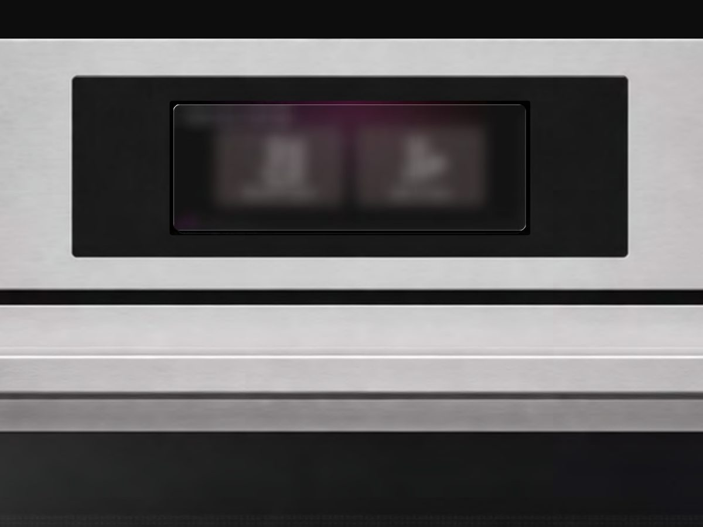
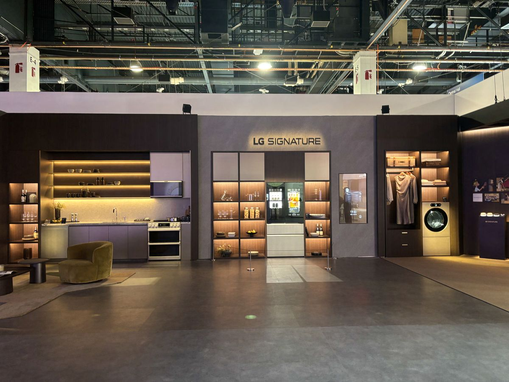

망설이는 순간을 찾아 리서치하고,
AI가 개입할 타이밍을 설계하고,
화면 위의 경험으로 구체화합니다.
To find where users hesitate, I research.
To time when AI steps in, I design.
To make it tangible, I build the experience.
Projects
2 Case Studies
2026.02 – 2026.07
AI Oven: Sous Chef Agent
판단 부담이 집중되는 오븐 세팅·조리 구간을 AI 개입 기회로 정의하고, 12가지 AI 기능을 3개 서비스로 구조화했습니다. 북미 사용자 20명 대상 프로토타입 테스트로 검증한 뒤 To-Be 경험과 '27–'28 로드맵으로 구체화했습니다.
Defined oven setup and cooking as the key moments for AI to step in, and structured 12 AI features into 3 services. Validated with a prototype test of 20 North American users, then shaped it into a To-Be experience and a 2027–28 roadmap.

2023.08 – 2025.02
AI Refrigerator: Food Intelligence
한·일 20가구 조사로 식재료 관리의 부담을 발견하고, 입·출고 인식 냉장고를 사용자와 커머스를 잇는 플랫폼으로 확장했습니다. 신뢰도 기반 인터랙션과 10개의 AI 경험을 설계했으며, CES 2025에 전시되어 본부 Creative Award를 수상했습니다.
Research with 20 households in Korea and Japan revealed the burden of managing food. I expanded a food-recognizing refrigerator into a platform linking users and commerce, and designed confidence-based interactions and 10 AI experiences. Exhibited at CES 2025 and won the division's Creative Award.